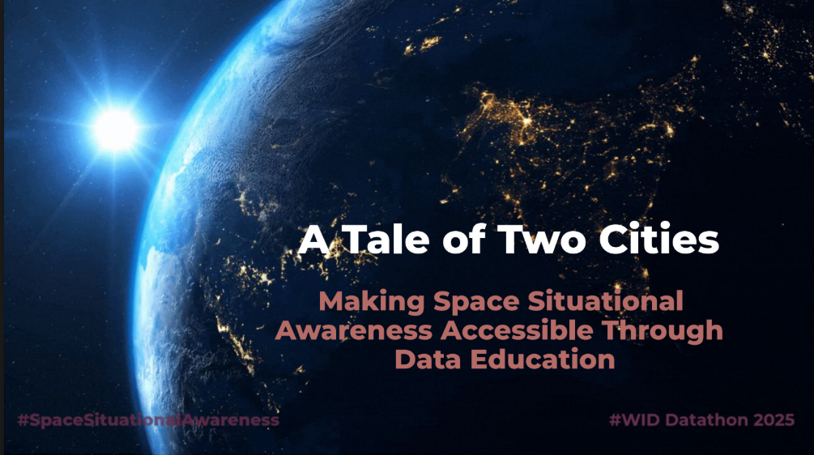
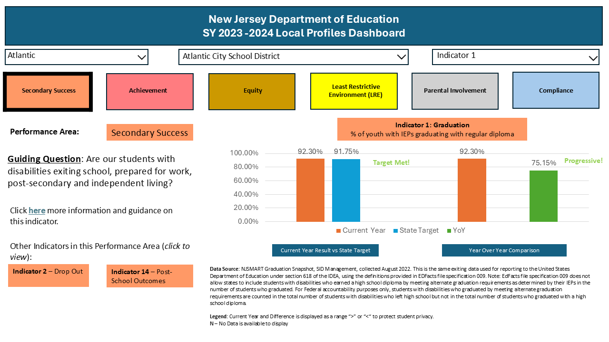
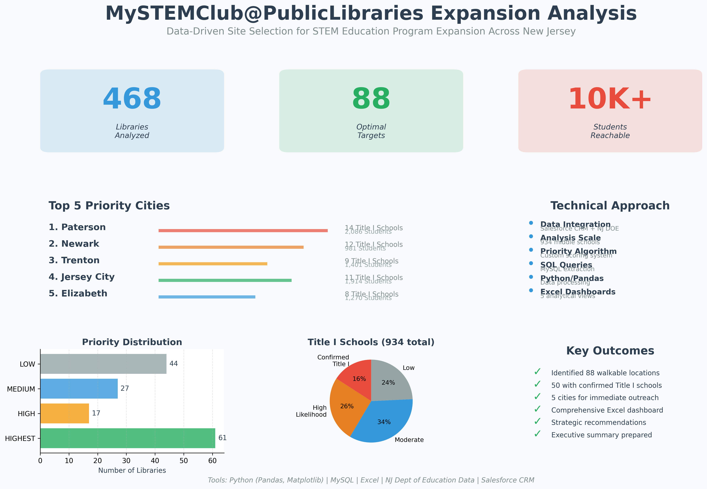

I'm a data professional with 7+ years of experience transforming complex data challenges into automated, scalable solutions across public sector organizations. Currently serving as a Business Intelligence Data Specialist with the NJ Judiciary, I design ETL pipelines, implement data quality frameworks, and build analytics infrastructure that supports evidence-based decision-making for hundreds of stakeholders.
My passion lies at the intersection of data engineering and social impact. I'm currently pursuing my MS in Data Science while transitioning from business intelligence to data engineering, with a focus on building reliable data infrastructure that serves mission-critical functions in public health, environmental protection, aerospace safety, and maritime security.
I believe that good data systems are the foundation of informed decision-making, and I'm driven to build infrastructure that empowers organizations to serve their communities better.
Featured Project
Led a collaborative team in the Women in Data (WID) Datathon, developing an end-to-end analytics solution to analyze Social Security Administration data and deliver actionable insights. This project showcased advanced data engineering, statistical analysis, and agile project management methodologies to tackle real-world challenges in public sector data systems.

Project Overview:
As team lead for this datathon challenge, I orchestrated a collaborative effort to extract, transform, and analyze complex Social Security Administration datasets. Leveraging agile methodologies, I guided the team through rapid iteration cycles, facilitating daily standups and sprint planning sessions to ensure timely delivery of insights. The project required sophisticated ETL pipeline development to process large-scale government data, implementing data quality validation frameworks and transformation logic to prepare datasets for advanced statistical analysis.
Demonstrating strong technical leadership, I architected the data infrastructure using Python and SQL, designing scalable pipelines that automated data extraction from multiple sources and applied rigorous quality checks. My approach integrated statistical methods and mathematical modeling to uncover trends in SSA data, while coordinating cross-functional collaboration between data engineers, analysts, and subject matter experts. The project exemplified mission-driven data work—using analytics to improve understanding of critical public services and inform evidence-based policy decisions.
Key Achievements:
- Leadership & Collaboration: Led diverse team through agile sprints, facilitating stakeholder communication and ensuring alignment on project objectives
- Data Pipeline Development: Designed and implemented automated ETL workflows processing multi-source government datasets with comprehensive error handling
- Statistical Analysis: Applied advanced statistical methods and mathematical modeling to identify patterns and trends in SSA benefit distribution data
- Project Management: Utilized agile methodologies including sprint planning, daily standups, and iterative development to deliver results under tight datathon timeline
- Data Quality Framework: Implemented validation logic and quality checks ensuring accuracy and reliability of analytical insights
- Public Sector Impact: Delivered actionable recommendations for improving Social Security Administration data systems and service delivery
Tech Stack: Python | SQL | Pandas | Statistical Analysis | ETL Pipelines | Data Visualization | Agile/Scrum | GitHub Collaboration
Data Modeling and Dashboard Project

Comprehensive dashboard mockup designed in PowerPoint, showcasing data quality monitoring capabilities, real-time KPI tracking, and executive reporting views. The design emphasizes intuitive data visualization, actionable insights, and user-centered interface principles for effective decision-making.
Design Features:
- Real-time data quality metrics visualization
- Executive KPI scorecards and trend analysis
- Interactive filtering and drill-down capabilities
- Alert systems for threshold breaches
- Mobile-responsive layout design
Design Stack: PowerPoint | Tableau Cloud Data Visualization | UI/UX Design | Dashboard Architecture
Business Analytics Project

Led a comprehensive analysis to identify optimal locations for expanding STEM education programs across New Jersey.
Key Features:
- Multi-source educational data integration
- Statistical analysis and trend identification
- Predictive modeling for expansion assessment
- Geo-location caluclations for city-level proximity analysis
- Salesforce extraction
Tech Stack: Salesforce CRM | MySQL | Data Integration | Statistical Analysis/Modeling
Project Overview
As Deputy Data Analytics Lead at JerseyStem, I led a comprehensive analysis
to identify optimal locations for expanding STEM education programs across
New Jersey. The project integrated Salesforce CRM data with NJ Department
of Education records to pinpoint public libraries in communities with
Title I middle schools.
Key Challenge
Inconsistent data formatting between Salesforce and NJ DOE systems
prevented direct matching. Developed custom standardization algorithm
to enable accurate integration of 468 libraries with 934 schools.
Professional Experience
State Government - Business Intelligence Analyst

July 2024 - Present
Design and implement automated ETL pipelines processing state level business statistics.
Build data quality with Excel, Queries, and Pivots to improve accuracy.
Develop VBA Scripting for automated analytics.
Automate workflows reducing processing time by 80%.
Extract data from Amazon Redshift and DB2 data warehouses.
Education
Master of Science in Data Science

Illinois Institute of Technology, In Progress (Expected 2027)
Focusing on advanced data systems, machine learning, Python development, and cloud architectures. Formalizing my transition from business intelligence to data engineering through rigorous academic training.
Master of Arts
American University (2007)
Bachelor of Arts
Drew University (2002)
I'm passionate about using data engineering to drive social impact. My career has focused on serving underrepresented communities through work in education, criminal justice, and public sector organizations. I believe reliable data infrastructure is essential for evidence-based decision-making that improves lives.
Currently seeking remote data engineering opportunities in mission-driven organizations working in:
- Public Health & Healthcare Systems
- Environmental Protection & Climate
- Aerospace & Aviation Safety
- Maritime Safety & Ocean Protection